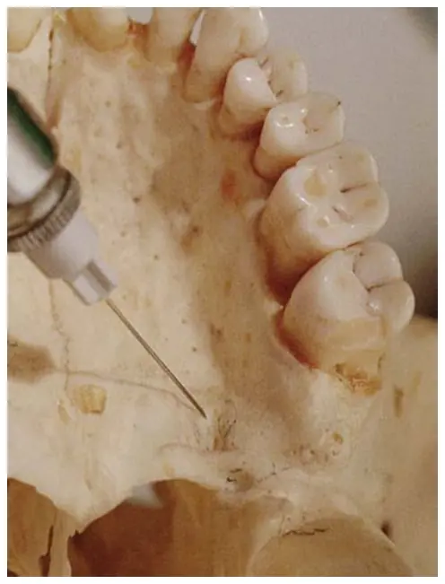
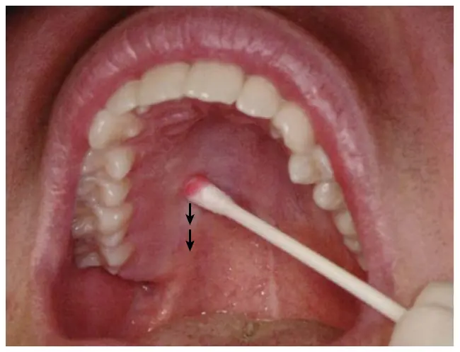

نسخه استخراجشده؛ ترجمه یا تأیید علمی انجام نشده است. وضعیت: captured
برای فلپ پالاتال از پرمولر دوم تا مولر دوم بالا، دانشجو میخواهد کنار هر دندان جداگانه در کام تزریق کند. با یک تزریق هم میشود؟

بله، با بلاک عصب پالاتین بزرگ (greater palatine). این عصب از سوراخ پالاتین بزرگ بیرون میآید و بین مخاط-پریوست و استخوان کام به جلو میرود تا حدود پرمولر اول؛ آنجا با فیبرهای عصب نازوپالاتین همپوشانی دارد. برای همین گاهی کام پرمولر اول پس از این بلاک کامل بیحس نمیشود و یک تزریق موضعی کوتاه همانجا لازم است.
این بلاک از بلاک نازوپالاتین کمدردتر است، چون بافت اطراف سوراخ پالاتین بزرگ کمتر به استخوان چسبیده و حجم محلول را بهتر جا میدهد.
در محل اتصال زائدهی آلوئولار و کام سخت، حدود ۱ سانتیمتر به سمت خط وسط، در ناحیهی مولر دوم و سوم. شایعترین جا روبهروی نیمهی قدامی مولر سوم است (حدود ۵۱٪)، سپس نیمهی خلفی مولر دوم (حدود ۴۰٪) و گاهی نیمهی خلفی مولر سوم (حدود ۹٪).
موفقیت این بلاک بیش از ۹۵٪ و آسپیراسیون مثبت آن کمتر از ۱٪ است.

وارد کانال پالاتین بزرگ نشو؛ لازم نیست. اگر محلول خیلی جلوتر از سوراخ تزریق شود، بافت پشت محل تزریق بیحس نمیشود. اگر عصب پالاتین میانی نزدیک محل بیرون بیاید، کام نرم هم بیحس میشود و برخی بیماران از این احساس ناراحتاند.